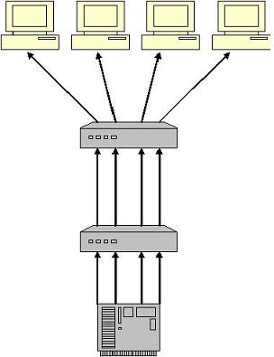
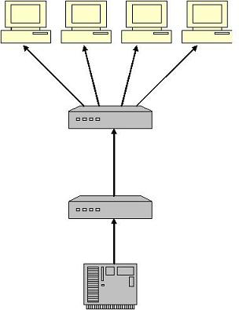

TOC
- Approaches
- Details
- References
Approaches (one to many communication)
- Broadcast to all (entire network). In a large network, it's expensive to broadcast the data across all routers/switches just to reach a subset of users.
- Unicast to all interested. This will require opening of multiple connections, not practical if there are many hosts.

- Multicast, where networking devices can decide whether to block or allow further broadcast of the data. If hosts have shown interest, broadcast only on that LAN/subnet. This limits the data transmitted across the network.

Sending multicast packets
- Open a UDP socket
- Fill Class D multicast address
- Set TTL (time to live)
- Send
Receiving multicast packets
- Bind to an IP address
- Join a multicast group. Will this send an IGMP request to inform the router about it?
Restrictions
- Multicast is possible only if there are routers capable of handling multicast traffic. i.e. they can honour IGMP requests with which hosts can register in a multicast group and can then forward the traffic sent to 204.* addresses.
- Since multicast is not one-to-one, it's possible only via UDP. There's no TCP stack on both ends to do the reliable delivery.
- In a single LAN/subnet, there's no meaning to multicast since anyway all the traffic is broadcast. Hosts can very well listen to broadcast traffic instead of multicast traffic.